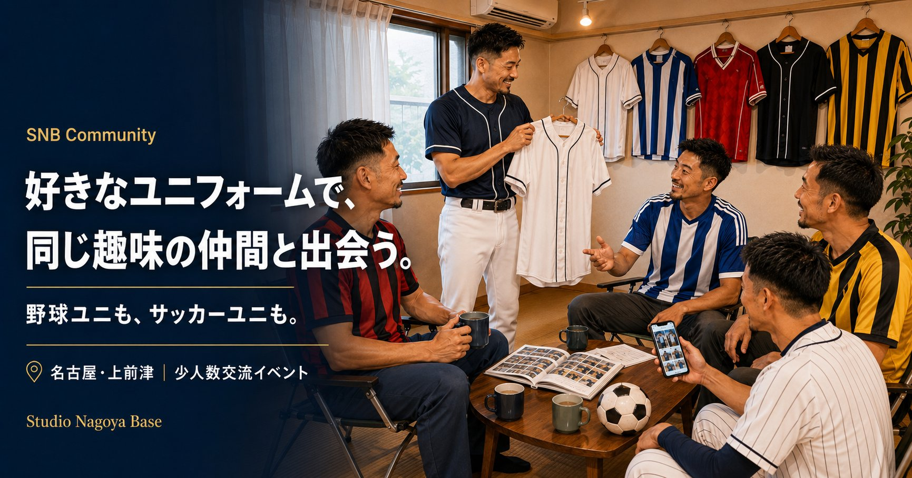

SNB Community — SNBC
東京や大阪には、ユニフォームや競パン、スーツをテーマにしたイベントがある。名古屋には、まだ少ない。
クローゼットに眠るお気に入りの一着を、名古屋で着る場所を作りました。
About
SNBコミュニティ（SNBC）は、Studio Nagoya Base を拠点に不定期開催する少人数交流イベントです。
撮影は交流のきっかけです。同じ趣味を持つ人たちが集まり、話したり、見せ合ったりすることを大切にしています。
お気に入りの衣装を着て、話して、撮られて、楽しむ。
そんな場を名古屋でゆるく続けています。
主催はアタル。撮影もアタルが担当し、イベントの記念としてセレクトした写真をお渡しします。
Format
Rules
参加前に 共通参加規約 をご確認ください。参加をもって規約に同意いただいたものとみなします。
Contact
参加希望・次回開催の通知希望は X のDMまたはメールにてご連絡ください。
開催決定時にお知らせします。